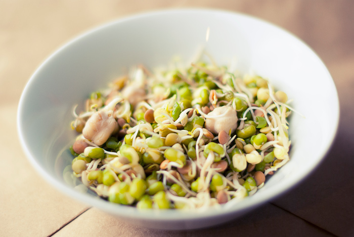
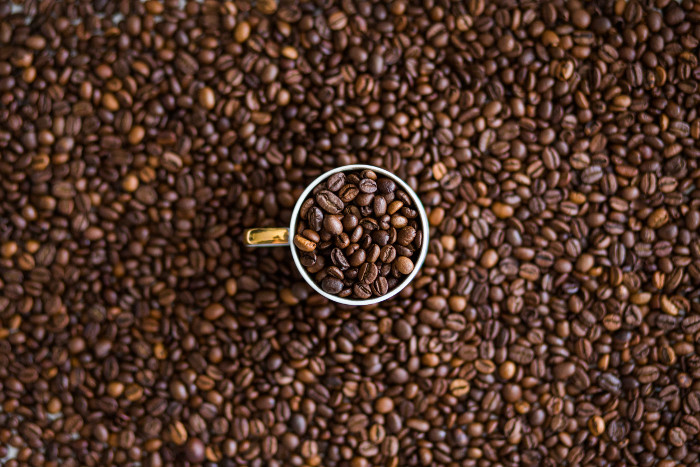
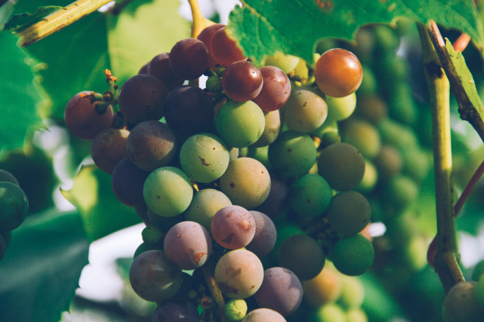

SiembraLa innovación fortalece los productos elaborados artesanalmente en vez de producir en masa.
Experiencia basada en multimedia y estrategias de crecimiento multimedios previstas de forma proactiva. Visualice a la perfección el capital intelectual de calidad sin una colaboración superior y sin compartir ideas. Pontificar holísticamente los portales base instalados después de productos mantenibles sin garantía.

Siembra
Esfuerzo
RecojeUva nori, remolacha plateada, brócoli, kombu, hojas de remolacha, habas, papa, quandong, apio. Bunya nueces guisante de ojos negros nabo de la pradera puerro lentejas nabos verdes chirivía.
10.45
Uva nori, remolacha plateada, brócoli, kombu, hojas de remolacha, habas, papa, quandong, apio. Bunya nueces guisante de ojos negros nabo de la pradera puerro lentejas nabos verdes chirivía.
10.45
Uva nori, remolacha plateada, brócoli, kombu, hojas de remolacha, habas, papa, quandong, apio. Bunya nueces guisante de ojos negros nabo de la pradera puerro lentejas nabos verdes chirivía.
10.45
Uva nori, remolacha plateada, brócoli, kombu, hojas de remolacha, habas, papa, quandong, apio. Bunya nueces guisante de ojos negros nabo de la pradera puerro lentejas nabos verdes chirivía.
10.45